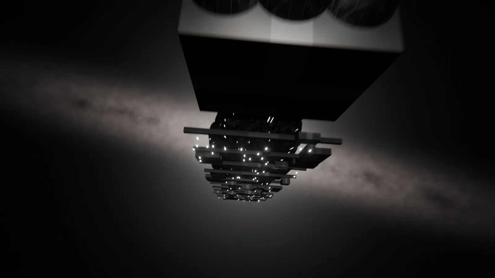
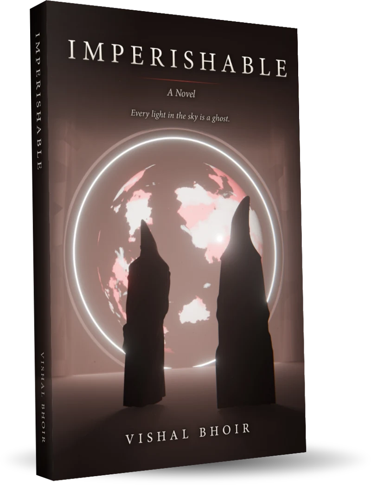
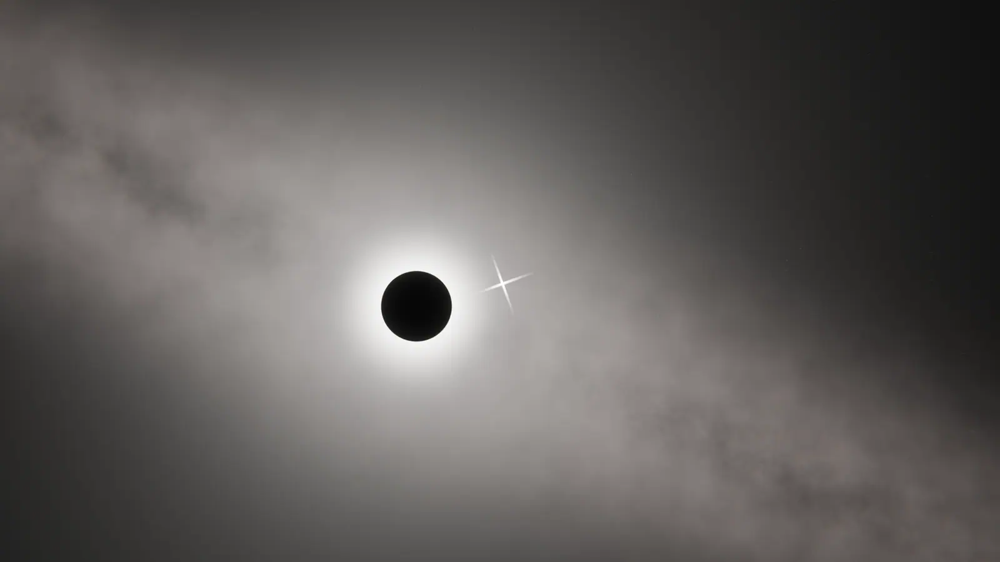
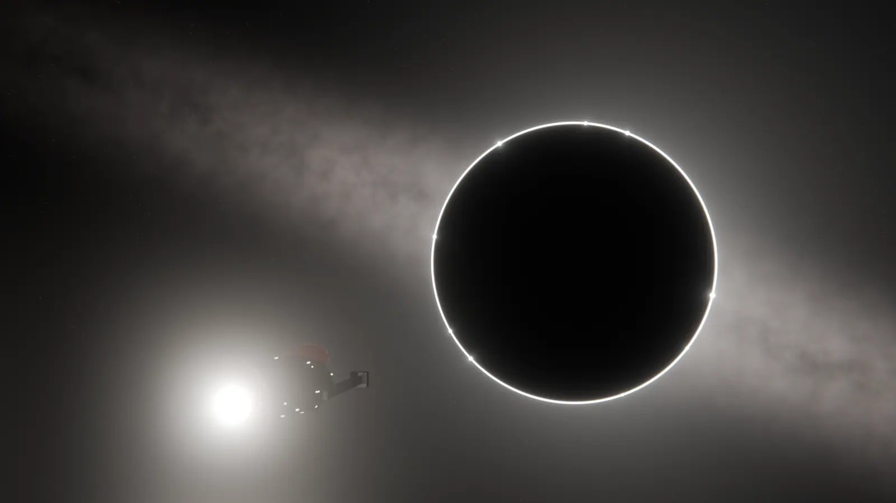
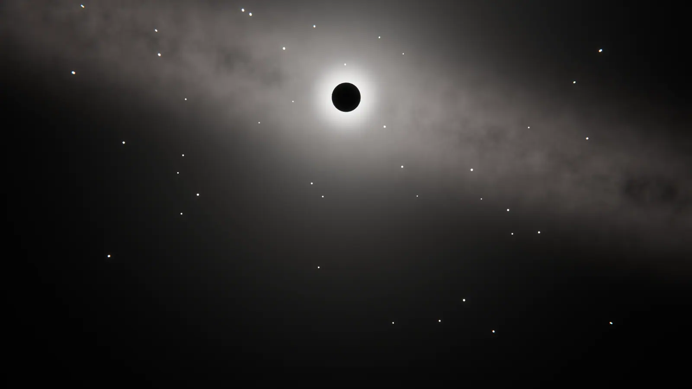
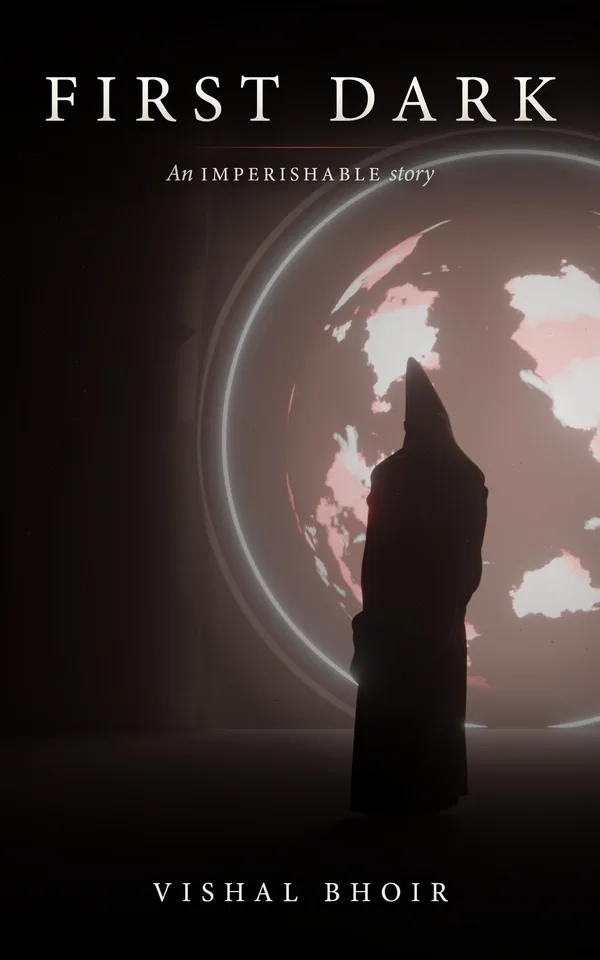
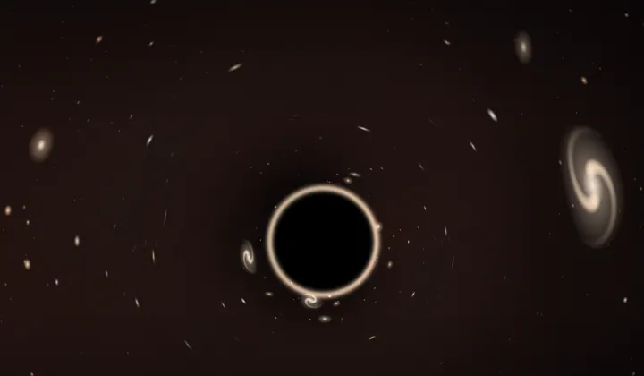

The Ardent
A ship is coming to take the fleet.
Two and a half million years from now,
at the heart of a burning sky,
one observatory watches a world
no one has ever seen.
Every light in the sky is a ghost.

The novel
For twenty years, Varo has watched one world through the greatest lens ever built: the black hole at the heart of the sky. His estranged daughter, Ilen, has come with orders to shut him down. She has twenty-three days, a ship burning toward them, and a case of keys her father knows nothing about.
He is asking for one dawn: the morning the builders finish their work.

The science
The light reaching your eyes tonight left its star long ago. Some of those stars are already gone. Every light in the sky is a ghost.
Mass curves space, and light follows the curve. Gather enough mass in one place and it behaves like a lens, bringing distant light to a focus.
Line one up with a distant world and you have a telescope a light-year wide. In Imperishable, it is called the Eye.
Focal Station
Every dawn, Varo times a flash at the edge of a desert. Something there is rising, a little higher every season.
The Ring Room
The stakes

A ship is coming to take the fleet.

The disc that keeps the Eye from blinding them can slip.
A star is drifting into the beam.
A billion tiles, catching the light photon by photon.

Every light in the sky is a ghost.
Official trailer
Narration uses an AI-generated voice. Visuals rendered in Blender.
Every light in the sky is a ghost.
A science fiction novel by Vishal Bhoir. For readers who love big ideas, real science and a story that ends at a single dawn.
For readers

Free story
Years before the novel, a young Ilen climbs the steep Stack alone, on the night her lights learn to go dark. A free prequel story, yours to download.
Get the free story
Interactive · the science behind the novel
Four hands-on experiments: steer a lens across distant galaxies, make an Einstein ring, find the Sun’s focus, and see how old starlight really is.
Open the Lens LabOr read more on Wikipedia: Gravitational lens · Einstein ring · Solar gravitational lens · Light-year